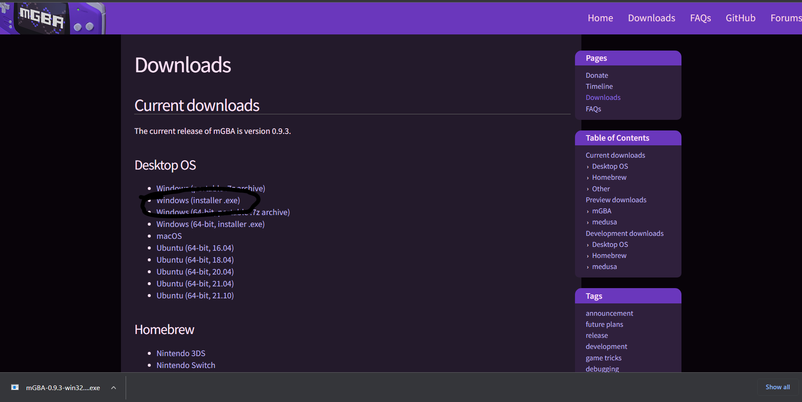
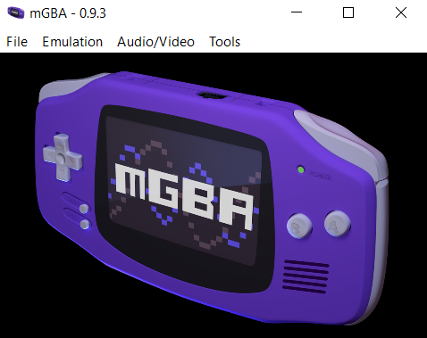
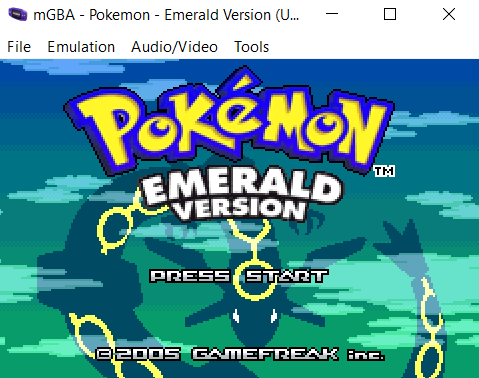
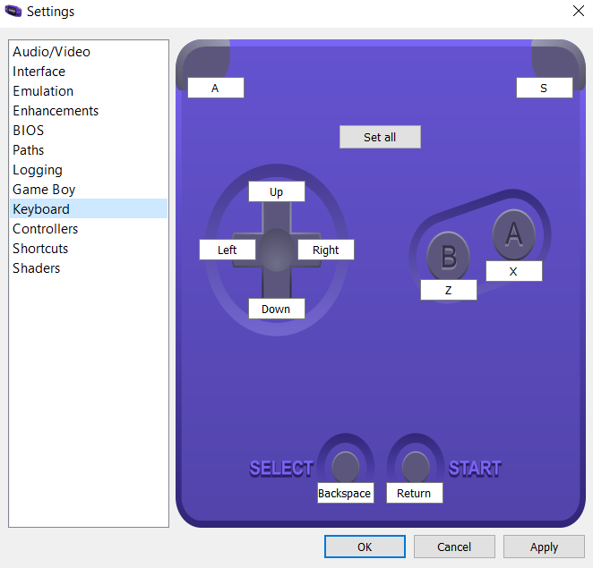
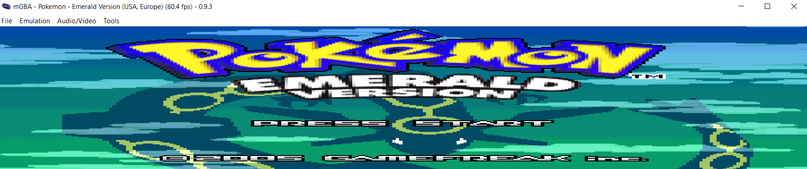

Requirements
- A .gba ROM file.
Step 1: Download mGBA
mGBA is an emulator for GBA games. It can be downloaded here.

Go through the setup wizard, agree to the agreement, pick where it gets saved to and launch mGBA.
Step 2: Loading the ROM
Once you have launched mGBA, you get met with a screen as such:

From here, you can either drag and drop the .gba file that you have into the window or go to File > Load ROM and manually pick the .gba file.

Congrats! You can now play your favourite GBA games on the PC!
Some mGBA tips!
- Double click the screen to play fullscreen.
- Make a folder for each game with the .gba file inside it, that is where the save file and screenshots get saved to.
- Go to Tools > Settings > Keyboard or Controller to setup controls.

- Go to Audio/Video > Lock Aspect Ratio and untick it and you can play m e g a - s t r e t c h e d games.

- Press F12 to take a screenshot, then go to wherever your game is saved and the .png file will be there.
- You can use save states by pressing Shift+F10, then load a state with F10.
- Alternatively, you can use Quick Save (File > Quick Save/Load) to do something similar.
- You can load cheats (filthy cheater) by going to Tools > Cheats, pressing "Add GameShark", name it whatever then go to Neoseeker or GameGenie and find codes there to paste into the box on the right.
- Alternatively, find a .cht or .cheat file and load it by going to Tools > Cheats > Load.